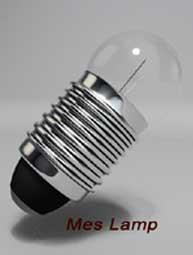
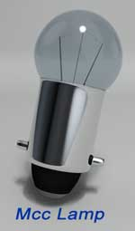
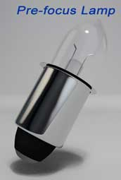

• Rating
Types of Electric Lamps
• Edison Screw
• Miniature Center Contact
• Small Bayonet Cap
• Wire Ended
An electric lamp is a conventional light emitting component used in different circuits, mainly for lighting and indicating purposes. The construction of lamp is quite simple, it has one filament surrounding which, a transparent glass made spherical cover is provided. The filament of the lamp is mainly made of tungsten as it has high melting point temperature. A lamp emits light energy as the thin small tungsten filament of lamp glows without being melted, while electric current flows through it.
Uses of Electric Lamps
These lamps mainly get used for lighting and indicating purpose. Although, now days use of light emitting diodes for these two purposes dominates uses of conventional lamps. But still they are in use although at maximum places they are replaced by LEDs.
Rating of Electric Lamps
There are mainly three things that must be known before selecting a lamp for a specific purpose.
- Voltage across which the lamp to be connected for getting normal brightness of light. This voltage rating of electric lamp must be marked on the lamps. If the supply of voltage across the lamp is lower than rated value, the lamp will not glow properly as electric current flowing through it will be insufficient. Again if the voltage across the lamp crosses the rated value, the filament may not be able to sustain the over current and it will blow out.
- Power rating or current rating of electric lamp: When an electric lamp is connected across its rated voltage, its filament will carry an electric current depending upon the electrical resistance offered by the lamp. The filament of the lamp is so designed, that it must give most optimized brightness for that current. This electric current rating of electric lamp is very important parameter, as it determines the power consumption of the lamp. As a filament of lamp is considered as 100% resistive, the power consumption is nothing but the product of voltage and electric current rating of the lamp. Consumption of power is nothing but power rating of the lamp. Hence, if voltage rating of a lamp is known to us, then it is enough to know either electric current rating or power rating of that lamp, as power rating can be calculated from current rating and electric current rating can be calculated from power rating since electric power is product of voltage and electric current . It is normal practice that small rated lamps are rated by current and higher rated electric lamps are rated by power.
Types of Electric Lamps
Another thing must be considered during selecting a lamp for a circuit. What types of electric lamp is suitable for specific circuits? Types of lamp depend upon designing pattern of the lamps. According to variation of deigns there are verities types of lamps are listed below,
Edison Screw type Lamps
The main feature of this type of lamp is that it has one contact in the base and other contact on the metallic body of the lamp. This metallic body of the lamp is of screw shaped. Commonly two types of Edison Screw lamps are available in market –
- Miniature Edison Screw Lamp (MES) its bulb diameter is 10 mm (approx).
- Lilliput Edison Screw Lamp (LES) its bulb diameter is 5 mm (approx).
Miniature Center Contact type Lamps
Like MES and LES, it has one contact in the base and other contact on the metallic body of the lamp. But main difference is that this metallic body of the lamp is not screw shaped-it has bayonet style fittings. Its bulb diameter is 10 mm (approx).
Small Bayonet Cap Lamps
It has also bayonet style fitting but has both contacts on the base of the lamp, hence there is no electrical connection with the body of the lamp. The standard bulb diameter is about 40 mm. It may have horizontal as well as vertical filament arrangements as shown. The power rating of the bulb can be up to 24 watt.
Wire Ended Lamps
These are very small size lamps of about 6 mm long and has 3 mm diameter. The design is very simple; here contact wires directly come out from the glass cashing. Wire ended lamps are mainly designed for very low power rating and are also available in the market in very cheap rate. This lamp does not need any lamp holder; it can be soldered directly to the circuit board with the help of the contact wires come out from the glass cashing.
 by
by